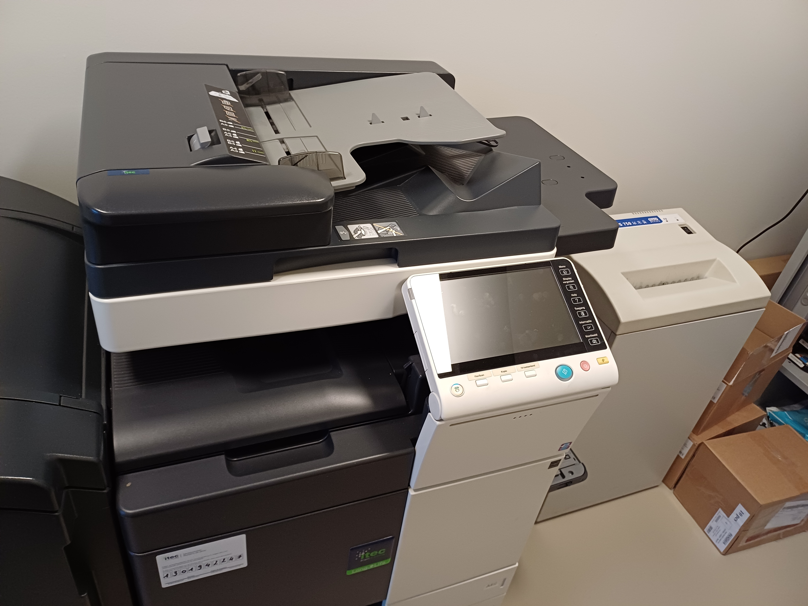
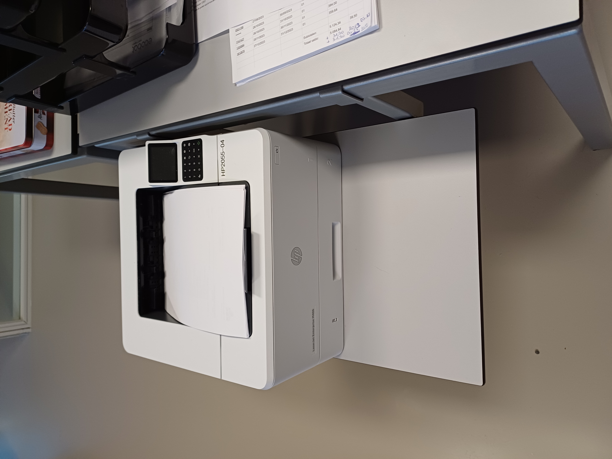

/Ecobat battery logo.jpg "logo Ecobat")
Voormiddag
De dag begon wanneer ik de opdracht kreeg om geprinte bladen te overhandigen aan Brigitte en Karin. Er zijn 2 printers in het bedrijf: 1 boven op de boekhoudafdeling, en 1 op het gelijkvloers (de benedenverdieping). De printer beneden dient om scans af te printen, de printer boven kan dienen om allerlei documenten af te drukken.
 Dagelijks moeten de bankuittreksels verwerkt worden. Ik mocht dit een paar keer doen, en vond dit wel interessant om te doen. Om 9.30 uur somde Karin mogelijke problemen op in het leven van een boekhouder. Zo leerde ik dat er een loyaliteit richting goede klanten bestaat (bv. het al dan niet toekennen van een kredietlimiet). Karin gaf ook meer uitleg omtrent gevolgen voor een bedrijf na het faillissement van een klant. Ze lichtte eveneens de takenverdeling op de afdeling toe. Om 10 uur verwerkte Brigitte nog een paar facturen. Om op tijd te kunnen anticiperen op te lang openstaande facturen, is het belangrijk om de dagelijks inkomende facturen te boeken. Vervolgens toonde Brigitte nog een handvol aangiftes. De eerste aangifte die ze liet zien was de Intrastat-aangifte, de aangifte waarop alle intracommunautaire verrichtingen staan. Ik kreeg ook de btw- en UBO-aangifte te zien. Ook legde Brigitte uit hoe Ecobat voldoet aan de GDPR-wetgeving. Als laatste activiteit van deze voormiddag hielp ik mee met de afwas. Niet altijd even leuk, maar ik was blij dat ik iets kon doen.
Middagpauze
Tegen het middaguur realiseerde ik me dat er een duidelijke taakverdeling heerst in Ecobat. Zowel op professioneel (op de boekhoudafdeling worden de taken tussen Brigitte en Karin eerlijk verdeeld) als niet-professioneel vlak (er is een beurtrol voor het schoonmaken van de koffiemachine). In de refter viel mijn oog op een lijst wie wanneer vakantie heeft. Ecobat draagt zorg voor haar werknemers, dat kon ik afleiden uit opgehangen affiches (er is bv. een meldpunt voor onesthetisch gedrag op de werkvloer, ziektepreventie...). Het bedrijf evalueert haar werknemers ook, zo heeft Fatima vandaag respectievelijk Brigitte en Karin op gesprek laten komen. De werknemers zorgen ook voor elkaar: zo is er een teambuilding gepland, collega's moedigen elkaar voor grote projecten aan, en wordt er een cadeau uitgedeeld aan een collega die gaat trouwen.
Namiddag
Na de middagpauze controleerde Karin of alle grootboekrekeningen van het voorbije boekjaar klopten. Tijdens de hele namiddag werd er ijverig gewerkt aan de audit, niet geheel onbegrijpelijk want deze moet binnenkort ingediend worden. Een audit is een verslag van controleurs die de boekhouding hebben doorgelicht. Om 13.30 uur verwerkte ik, onder toezicht, een paar aankoopfacturen voorzien van handelsgoederen. Ik haalde veel voldoening uit deze opdracht. Brigitte vermeldde ook dat ze regelmatig moet checken of de vorderingen die Ecobat heeft bij haar zusterondernemingen (Ecobat Battery Spain, Posthuma, Ecobat Battery UK...) overeenkomt met de schuld die deze dochterondernemingen bij Ecobat hebben. Belangrijk in de boekhouding is dat alle bedragen met elkaar overeenkomen. Echter mag men -als het bedrag op 1 eurocent niet klopt- een regel aanmaken zodat deze wel zal kloppen. Verder zag ik hoe Karin afschrijvingen narekende. Om 14.45 uur vond een Teams-meeting plaats. Daarna was Brigitte bezig met te controleren of alle btw-bedragen een nulsaldo hebben, was dit niet het geval, dan zocht ze naar de oorzaak waarom dit niet het geval was. Vervolgens gaf ze in Excel 'het attest van de loonstaten' van SD Worx in. Mijn stage eindigde met het klasseren van facturen.
Mijn dag in 1 woord
Voldoening
'Voldoening', omdat ik veel voldoening haalde uit de taken die ik vandaag -en deze week- mocht doen. Ik genoot enorm van de uitgelezen kans die ik kreeg om te zien hoe het bedrijfsleven eruitziet. Het was fijn om waar te nemen van wat ik op school gezien had, ik ook in de praktijk nodig heb.